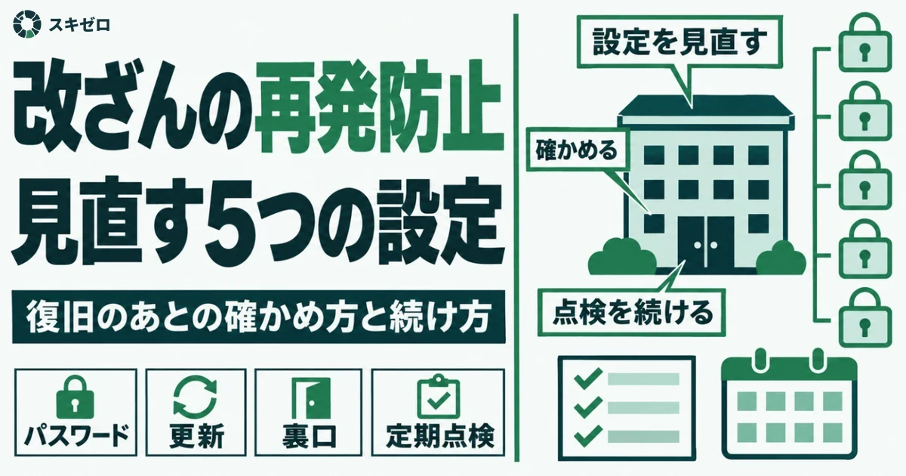
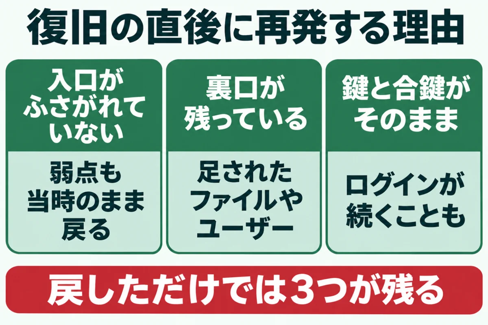
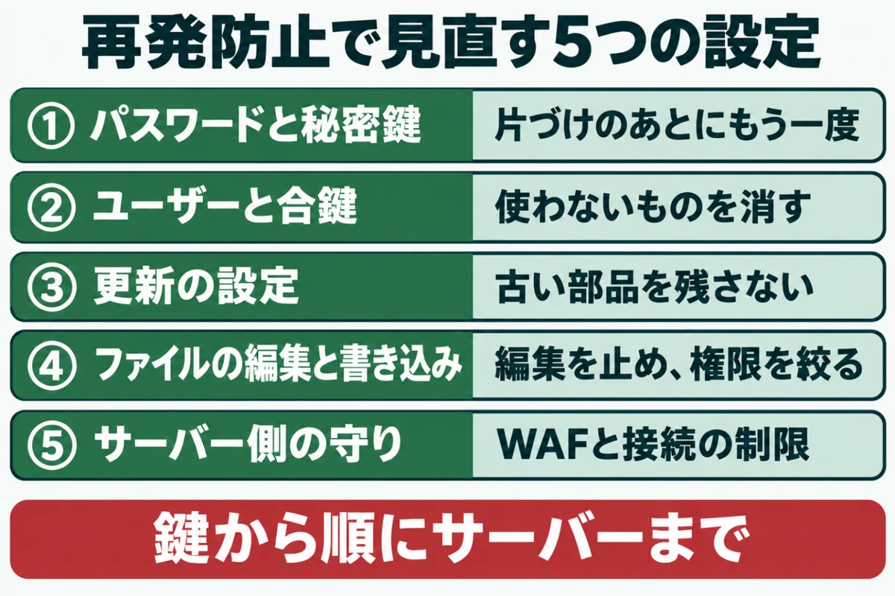
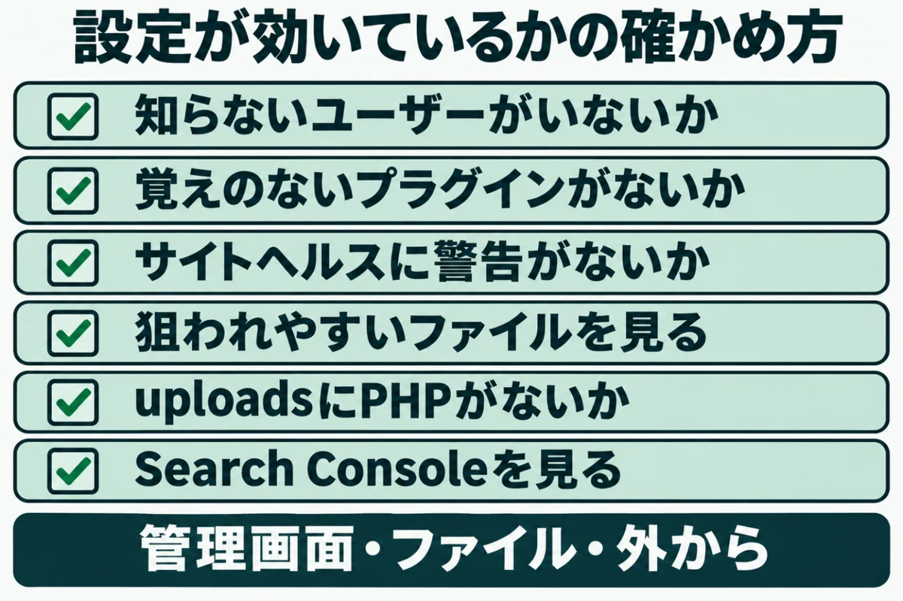
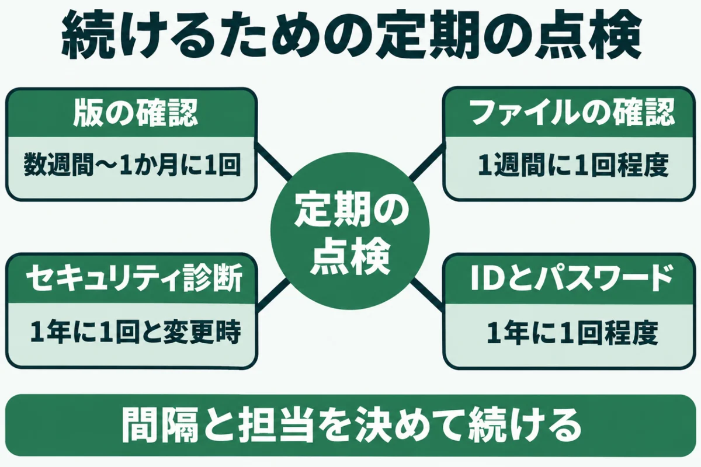
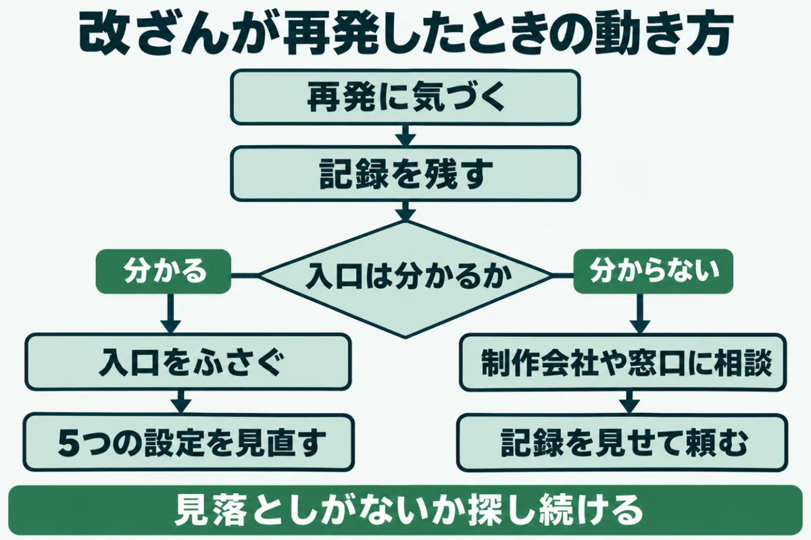

改ざんの再発防止で見直す5つの設定復旧のあとの確かめ方と続け方

ホームページの改ざんを復旧したあと、また同じことが起きないかと不安になっていませんか？
元に戻しただけでは、入られた入口も、相手が残した裏口もそのままのことがあります。エックスサーバーのマニュアルも、根本の原因が残るうちは再発の可能性が非常に高いと書いているのです。
この記事では、復旧のあとに見直す5つの設定を、確かめ方と続け方まで順にまとめました。復旧の作業そのものは、済んでいる前提で進めます。
メニューの名前や数字は、2026年11月27日に公式の資料で確かめたものです。これで再発しないという保証はできませんが、入られにくい状態には近づけます。
改ざんの再発防止が、復旧の直後に欠かせない理由

改ざんの再発防止は、復旧の直後に済ませてください。元に戻す作業と、入口をふさぐ作業は別ものだからです。
再発しやすい理由は、大きく3つに分けられます。入口、裏口、鍵のどれかが残っていると、同じ相手にまた入られるのです。Googleのweb.devも、独立した仕掛けが複数あることがあると書いています。理由を知っておけば、見直す設定の意味もつかめるでしょう。
入られた入口がふさがれていない
改ざんには、相手が最初に入った入口があります。IPAは、2025年に届いた不正アクセスの被害を原因ごとに分類しました。最も多いのは「ID、パスワード管理の不備」で、30件です。次が、古い版の利用や修正プログラムなどの未導入で、18件でした。「設定の不備」も7件あります。バックアップで戻すと、弱点も当時のまま戻るのです。WordPressの公式のFAQ（日本語版）も、古い版は攻撃を受ける危険が高いと書いています。入口の見当をつけてから、設定を見直しましょう。
- 参考：コンピュータウイルス・不正アクセスの届出状況［2025年（1月～12月）］｜IPA 独立行政法人 情報処理推進機構
- 参考：不正アクセス（ファイルの改ざん、不正なファイル設置）について｜エックスサーバー
- 参考：FAQ ハッキングされた場合は｜WordPress.org 日本語
裏口のファイルやアカウントが残っている
相手は、次に入るための裏口を残していくことがあります。バックドアと呼ばれる仕掛けです。エックスサーバーのマニュアルは、被害にあったサイトについてこう説明しました。不正なファイルのほかに、裏口が置かれている可能性が非常に高いという内容です。WordPressの公式のFAQによると、不正なファイルは新しく足されることがあります。元からあるファイルを上書きしても、足された分は消えません。身に覚えのないユーザーも、裏口の1つでしょう。見える被害を直しただけでは、裏口まで片づいたとは限らないのです。
パスワードと合鍵がそのままになっている
パスワードを変えていなければ、相手は同じ鍵でまた入れます。変えたつもりでも、もれが出やすいのが合鍵です。WordPressの公式のFAQは、パスワードを変えてもログインが続く場合を挙げています。ログインの印であるCookieが、有効なまま残るからです。FTPやデータベースのパスワードも、変える対象に入っています。復旧の途中で変えただけなら、片づけのあとにもう一度変えるよう勧める内容です。外部のアプリ用のアプリケーションパスワードも、別の鍵として扱われます。
改ざんの再発防止で見直す5つの設定

改ざんの再発防止で見直す設定は、鍵、人、更新、ファイル、サーバーの5つです。入口と裏口と鍵を、順にふさいでいく並びにしました。
どれも、WordPressの公式の手引きやサーバー会社のマニュアルにある内容です。作業の前に、今の状態のバックアップを取ってください。5つを終えたら、変えた内容と日付をメモに残しましょう。
① パスワードと秘密鍵を、片づけのあとにもう一度変える
最初に、作業に使うパソコンをウイルス対策ソフトで検査します。次に、サイトに入れるパスワードをすべて変えてください。公式のFAQが挙げる対象は、管理画面、FTP、サーバーの管理パネル、データベースです。片づけが済んだあとに、もう一度変えるよう勧めています。データベースのパスワードは、wp-config.phpにも書かれた値です。変えたら、ファイルの側も合わせましょう。同じファイルの秘密鍵を新しくすると、残ったログインを切れます。公式の手引きは、2段階認証を足すことも勧める内容です。
② ユーザーとアプリケーションパスワードを整理する
管理画面の「ユーザー」から「ユーザー一覧」を開きます。エックスサーバーのマニュアルも、身に覚えのないユーザーや不要なユーザーの削除を求めました。使っていない管理者は、消すか権限を下げてください。見落としやすいのが、アプリケーションパスワードです。公式の手引きによると、ログイン画面では使えず、外部のアプリの接続に使われます。ユーザーの編集画面で、覚えのないものを取り消しましょう。運営者の自社サイトの点検でも、使わなくなったものが残っていました。
③ 本体・プラグイン・テーマの更新の設定を見直す
入口になりやすいのが、古いままの部品です。公式の手引きは、古い版のWordPressには安全のための更新が届かないと書いています。プラグインは、使わないものを止めるだけでなく削除しましょう。web.devも、ファイルごと消すよう勧める内容です。プラグインとテーマの自動更新は、1つずつ有効にできます。運営者の自社サイトの点検では、配布が止まったプラグインも残っていました。任せる範囲は、WordPressの自動更新は有効にすべき？良い点と注意点｜任せる範囲の決め方と確かめ方を見てください。
- 参考：Hardening WordPress｜WordPress Developer Resources
- 参考：Top ways sites get hacked by spammers｜web.dev
- 参考：Plugin and themes auto-updates｜WordPress.org Documentation
④ 管理画面からのファイル編集と、書き込みの権限を絞る
WordPressの管理画面には、テーマやプラグインのファイルを書き換える機能があります。公式の手引きによると、ログインした攻撃者が最初に使うことの多い道具です。wp-config.phpに1行を足すと、この機能を止められます。ただし、不正なファイルのアップロードまでは止まりません。ファイルの権限について、手引きはフォルダを755、ファイルを644にする例を示しています。wp-config.phpは、400か440が目安という説明です。共用のサーバーでは、サーバー会社の案内も確かめましょう。
⑤ サーバー側の守りの設定を有効にする
最後に、サーバーの管理画面にある守りの設定を見ます。エックスサーバーのマニュアルは、予防策にWAF設定を挙げました。WordPressセキュリティ設定も、同じ予防策の1つです。国外からの接続や、ログインの試行回数を制限できます。初めから有効とは限らないので、画面で確かめてください。運営者のサーバーでも、最初からあるドメインのWAFが6つの項目ともオフでした。JPCERT/CCは2016年の注意喚起で、更新できるパソコンを絞る対策も挙げています。FTPをやめ、安全な接続を使うことも勧める内容です。
- 参考：不正アクセス（ファイルの改ざん、不正なファイル設置）について｜エックスサーバー
- 参考：WordPressセキュリティ設定｜エックスサーバー
- 参考：Web サイト改ざんに関する注意喚起｜JPCERT/CC
改ざんの再発防止の設定が効いているかの確かめ方

設定を見直したら、効いているかを3か所で確かめます。管理画面、サーバーのファイル、外からの見え方です。
どれも、特別な道具を使わずに見られる場所を選びました。1か所だけでは、見えない部分が残ります。管理画面に出てこない不正なファイルもあるからです。確かめた日と結果は、メモに書き足してください。次の点検で、前回との違いを比べられます。
管理画面でユーザー・更新・サイトヘルスを見る
管理画面では、3つの画面を順に開きます。「ユーザー一覧」では、知らないユーザーが増えていないかを見てください。プラグインの一覧では、入れた覚えのないものを探します。更新の知らせが残っていないかも、あわせて見ましょう。「ツール」の「サイトヘルス」も役に立ちます。公式のドキュメントによると、注意が要る項目をまとめて示す画面です。更新待ちのプラグインや、自動の更新が動いていない状態が表示されます。警告が出ていたら、内容を読んで1つずつ片づけてください。
サーバーのファイルに不審なものがないかを見る
サーバーのファイルマネージャーなどで、ファイルの一覧を開きます。WordPressの公式のFAQは、狙われやすい場所を挙げました。最上位の階層の.htaccessとindex.php、テーマのfunctions.phpなどです。自分が触っていない日に更新されたファイルを探しましょう。FAQは、ファイルを最後までスクロールして読むよう勧めています。不正なコードが、下のほうに隠されることがあるためです。運営者の自社サイトの点検では、uploadsのフォルダにPHPのファイルがないかも確かめました。
Search Consoleと検索結果で外から見る
外からの見え方は、GoogleのSearch Consoleで確かめます。「セキュリティの問題」のレポートを開いてください。ヘルプによると、問題がなければ緑色のチェックマークが表示されます。問題の分類は、ハッキングされたコンテンツなどの3つです。運営者も、自社のサイトをSearch Consoleに登録しています。検索結果に見覚えのないページがないかも見ましょう。見分け方は、ホームページが改ざんされたかも？確認したい7つのサインと自分でできる確かめ方にまとめました。
改ざんの再発防止を続けるための定期の点検

改ざんの再発防止は、設定を1度見直して終わりではありません。点検を定期の仕事として決めておくことが大切です。
JPCERT/CCも、運用管理の中で定期的に点検するよう勧めています。Googleのweb.devは、長く続ける保守の計画を作るよう書きました。新しい弱点は、あとから見つかるからです。間隔と担当を決めておけば、忘れにくくなるでしょう。無理のない回数から始めてください。
点検の項目と間隔を決める
JPCERT/CCは2016年8月の注意喚起で、点検の項目と頻度の目安を示しました。次の表は、その4つの項目です。公表から年数はたっていますが、考え方は今も使えます。ファイルの確認は、1週間に1回程度と短めの間隔でした。毎週が難しければ、まず月に1回から始めましょう。WordPressの版は、管理画面の「更新」で確かめられます。パスワードの確認は、使い回しがないかを見る項目です。表を自社の予定に写し、担当の名前も書いておいてください。
| 点検の項目 | 頻度の目安 |
|---|---|
| 利用製品（プラグインなどを含む）の版が最新かの確認 | 数週間〜1か月に1回程度 |
| Webサーバ上のファイルの確認 | 1週間に1回程度 |
| Webアプリケーションのセキュリティ診断 | 1年に1回程度と、機能追加などの変更時 |
| ログインIDとパスワードの確認 | 1年に1回程度 |
バックアップを取り、前回との違いを比べる
バックアップは、戻すためだけのものではありません。JPCERT/CCは、バックアップを取り、差分を定期的に確かめるよう勧めています。前回と比べれば、足されたファイルや書き換えに気づけるからです。公式の手引きも、データベースを含めて定期的に取るよう書いています。公式のFAQによると、きれいな控えがあれば次の復旧が軽く済むのです。取り方は次の記事にまとめました。WordPressのバックアップの取り方と、戻す練習のしかた｜ファイルとデータベースの両方を守る。
改ざんが再発したときの動き方と、再発防止を任せる目安

設定を見直しても、改ざんがまた起きることはあります。そのときは、前回の記録と見比べて入口を探し直しましょう。
公式の手引きも、安全対策は危険をなくすものではなく減らすものだと書いています。再発は、どこかに見落としが残っていたという知らせです。自社で追いきれないときは、無理をせず早めに任せる判断をしてください。
また起きたら、記録を残して入口を探し直す
再発に気づいたら、前回と同じく記録から始めます。画面、気づいた日時、変わっていたファイルを控えてください。web.devは、1つ見つけても探し続けるよう勧めています。WordPressの公式のFAQも、手作業での片づけについて警告しました。1つでも見落とせば、またハッキングされるという内容です。Googleのヘルプによると、直しきる前の審査の依頼にも注意が要ります。次の結果が出るまでの時間が、延びることがあるのです。戻し方は、ホームページ改ざんの復旧手順｜発見から再発防止までを見てください。
- 参考：Identify the vulnerability｜web.dev
- 参考：FAQ ハッキングされた場合は｜WordPress.org 日本語
- 参考：セキュリティの問題レポート｜Search Console ヘルプ
自社で続けるのが難しいときに任せる目安
次のどれかに当てはまれば、任せることを考えましょう。入口が分からない場合、同じ改ざんが繰り返される場合、点検の時間が取れない場合です。まず、制作会社や保守を頼んでいる会社に、記録を見せて相談します。IPAの企業組織向けの「サイバーセキュリティ相談窓口」も使える窓口です。応急処置の助言や、専門業者の一覧の紹介を受けられます。受け付けはメールで、事案の調査や解析は行っていません。IPAの20ヶ条も、定期的な検査や診断を続けることが重要だと書いています。
URLを入れるだけで、WordPress本体の更新漏れや守りの設定の抜けなど8項目を無料で判定します。無料簡易診断が見るのは、外から見える範囲だけです。続けて確かめたいときは、定期診断（ライト月4,980円・税込、スタンダード月19,800円・税込）もご利用ください。
無料で診断する改ざんの再発防止に関するよくある質問
パスワードは復旧のときに変えました。もう一度変える必要はありますか？
片づけの途中で変えただけなら、もう一度変えてください。WordPressの公式のFAQも、サイトがきれいになったあとに再び変えるよう勧めています。片づけが済む前は、裏口が残っていたおそれがあるからです。対象は、管理画面、FTP、サーバーの管理パネル、データベースの4つになります。wp-config.phpの秘密鍵も、あわせて新しくしましょう。パスワードを変えても残るログインを、切るための作業です。
設定の見直しが終わる前に、サイトの公開を再開してもよいですか？
入口をふさぐ前の再開は、勧めません。Googleのweb.devは、公開を再開する前の確認項目を挙げています。最新の版になっているか、使わないプラグインを消したかという項目です。根本の原因を直したか、安全を保つ計画があるかも並んでいます。すべてに「はい」と答えられてから、公開に戻す流れです。急ぐ事情があるときも、パスワードと更新だけは先に済ませてください。
セキュリティのプラグインを入れれば、再発防止になりますか？
プラグインだけでは、再発防止として足りません。入られた入口や残った裏口は、プラグインを入れても消えないからです。先に、パスワード、ユーザー、更新の3つを見直してください。そのうえで足りない守りを補う使い方なら、役に立つでしょう。プラグイン自身も、更新を続ける必要がある部品です。公式の手引きも、プラグインは常に更新し、使わないものは削除するよう書いています。
制作会社に復旧を頼みました。自社で確かめることはありますか？
何を直し、何を変えたかを、書面やメールで受け取ってください。入口の見当、変えたパスワードの種類、消したユーザーやファイルが主な項目です。更新の設定と、今後の点検を誰が受け持つかも聞きましょう。自社の管理者アカウントで管理画面に入れるかも、確かめておくと安心です。任せきりにすると、次に異変が起きたときに経緯をたどれません。受け取った内容は、点検のメモと一緒に保管してください。
5つの設定を見直せば、もう改ざんされませんか？
改ざんされないという保証はできません。WordPressの公式の手引きも、安全対策は危険をなくすものではないと書いています。目指すのは、危険を減らすことです。5つの設定は、入口と裏口と鍵をふさぎ、入られにくくするためのものと考えてください。新しい弱点は、あとから見つかります。設定の見直しと定期の点検を組み合わせることが、現実的な備えになるでしょう。
まとめ
改ざんは、元に戻しただけでは再発しやすいものです。入口、裏口、鍵のどれかが残っていると、同じ相手にまた入られます。
見直す設定は、鍵、人、更新、ファイル、サーバーの5つです。済んだら3か所で確かめ、間隔を決めて点検を続けましょう。入口が分からないまま再発したときは、早めに相談してください。
まずは、今の状態を知るところから。
URLを入れるだけで、数十秒で判定が出ます。登録はいりません。